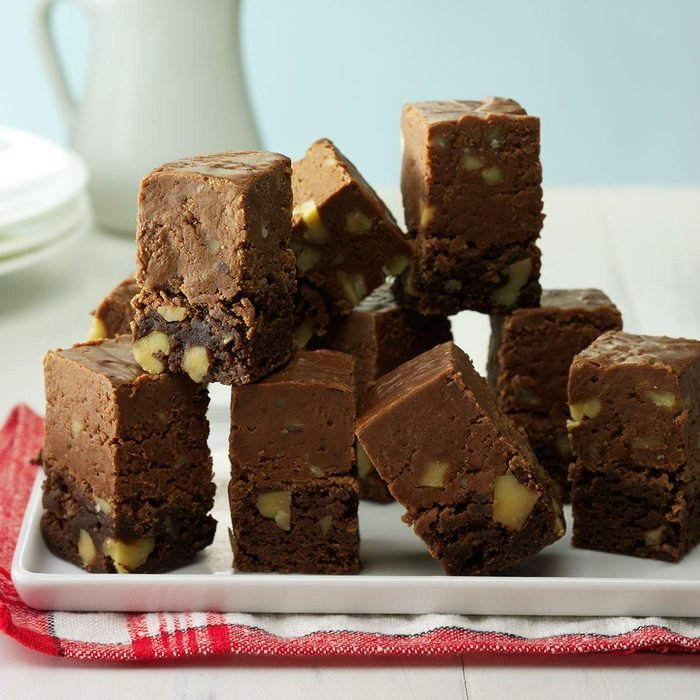

Fudge-Topped Brownies
Total Time: 50 min Prep: 25 min Bake: 25 min
This is perfect recipe for both worlds. You can't go wrong combining fudge and brownies together!

Ingredients:
- 1 cup butter, cubed
- 4 ounces unsweetened chocolate, chopped
- 2 cups sugar
- 2 teaspoons vanilla extract
- 4 large eggs, room temperature
- 1-1/2 cups all-purpose flour
- 1 teaspoon baking powder
- 1/2 teaspoon salt
- 1 cup chopped walnuts
Topping:
- 4-1/2 cups sugar
- 1 can (12 ounces) evaporated milk
- 1/2 cup butter, cubed
- 1 package (12 ounces) semisweet chocolate chips
- 1 package (11-1/2 ounces) milk chocolate chips
- 1 jar (7 ounces) marshmallow creme
- 2 teaspoons vanilla extract
- 2 cups chopped walnuts
Directions:
- In a heavy saucepan or microwave, melt butter and chocolate; stir until smooth. Remove from the heat; blend in sugar and vanilla. Add eggs; mix well. Combine the flour, baking powder and salt; add to chocolate mixture. Stir in walnuts. Pour into a greased 13x9-in. baking pan. Bake at 350° until top springs back when lightly touched, 25-30 minutes. Cool on a wire rack while preparing topping.
- Combine the sugar, milk and butter in a large heavy saucepan; bring to a boil over medium heat. Reduce heat; simmer, uncovered, for 5 minutes, stirring constantly. Remove from the heat. Stir in the chocolate chips, marshmallow creme and vanilla until smooth. Add walnuts. Spread over warm brownies. Freeze for 3 hours or until firm. Cut into 1-in. squares. Store in the refrigerator.
Nutrition Facts
1 piece: 128 calories, 6g fat (3g saturated), 15mg cholesterol, 46mg sodium, 18g carbohydrate (15g sugars), 2g protein